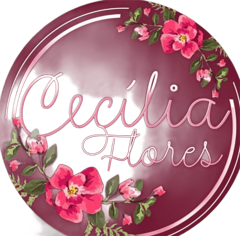
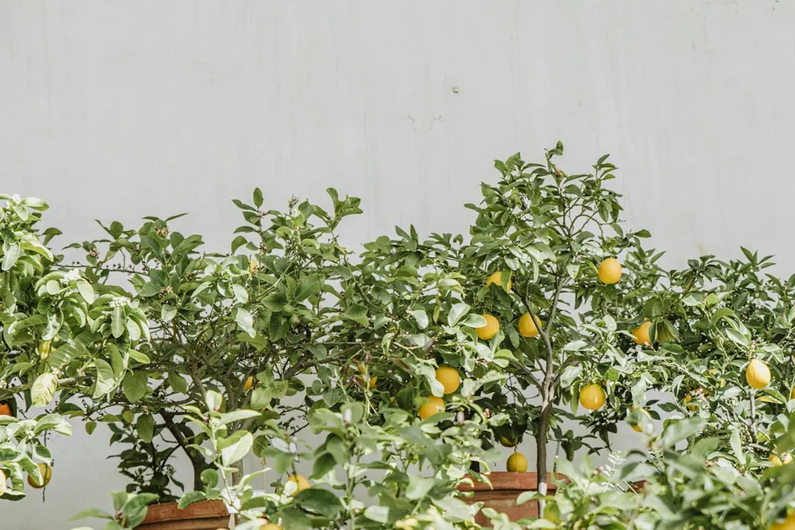
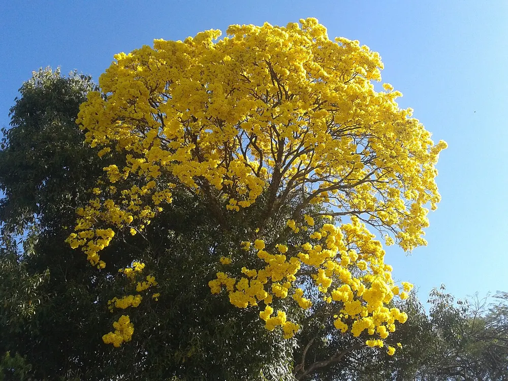
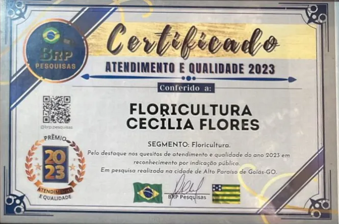

Ornamentais
Orquídeas, calateias, suculentas, folhagens e flores de vaso para dentro e fora de casa.
Perguntar disponibilidade
Floricultura e viveiro em Alto Paraíso de Goiás, desde 2013.
Cada buquê é montado na hora, com flores escolhidas para a pessoa e a ocasião. Toque numa foto para ver de perto e pedir um parecido.
Cestas de café da manhã, chocolates, vinho e flores, montadas para quem você quer surpreender.
Mudas para o seu quintal, varanda ou sítio. Pergunte pelo WhatsApp o que tem disponível hoje.
Orquídeas, calateias, suculentas, folhagens e flores de vaso para dentro e fora de casa.
Perguntar disponibilidade
Mudas de árvores frutíferas para plantar e colher em casa.
Perguntar disponibilidade
Espécies nativas da região, que se adaptam ao clima da Chapada e atraem pássaros e abelhas.
Perguntar disponibilidadePara quem precisa de mais do que um buquê.
Cerimônia, mesas e altar, com flores combinadas ao estilo da festa.
Camas decoradas e ambientes preparados para pedidos de namoro, lua de mel e datas especiais.
Montagem de jardins e manutenção a cada três meses.

Quem atende você é a Wilma, fundadora da Cecília Flores.
“Comecei em 2013 porque as pessoas onde moro gostam muito de plantas e arranjos. Na época não tinha nenhuma floricultura aqui. Hoje sou uma das mais renomadas da cidade. Em 2023 ganhei o certificado de melhor atendimento e qualidade.”
Wilma
Atenção: não estamos mais na Avenida Paraíso.